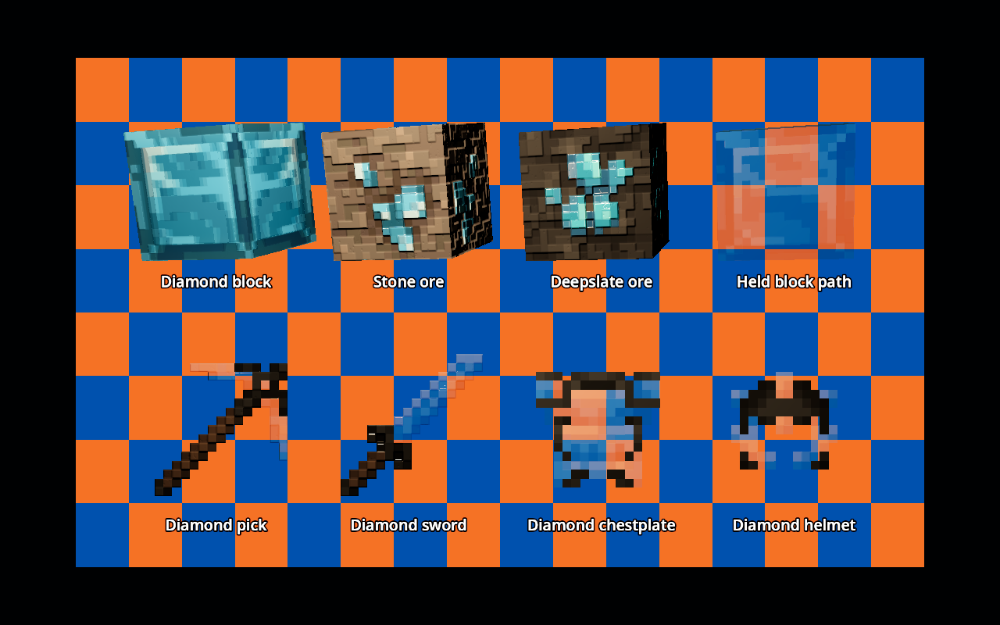
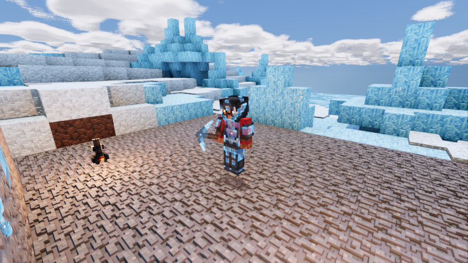

Diamond tools, held blocks and armour now transmit the background. Handles and dark joins remain solid. Placed blocks and ore keep their backing so they cannot reveal hidden terrain.
Production shaders on cubes and flat item cards. Both views use the same lighting, materials and internal facets; only transparency changes.

Mineclonia on Luanti 5.17.0, Godot 4.5.1. A detached camera views the player's full-body mesh. Clothing shows through the crystal plates.

Background transmission uses alpha blending, without refraction of the scenery or coloured transmission shadows. Overlapping transparent surfaces retain the renderer's object-sorting limitations.